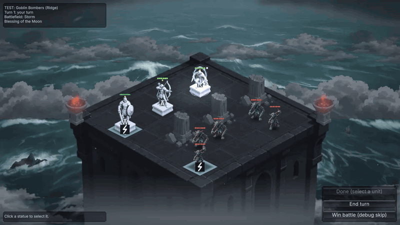
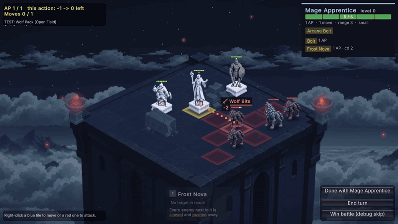
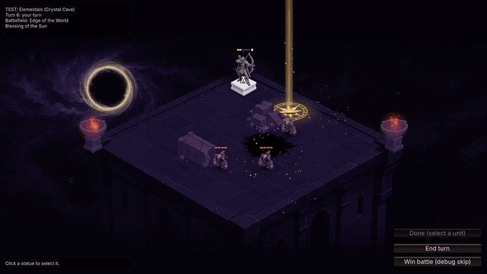
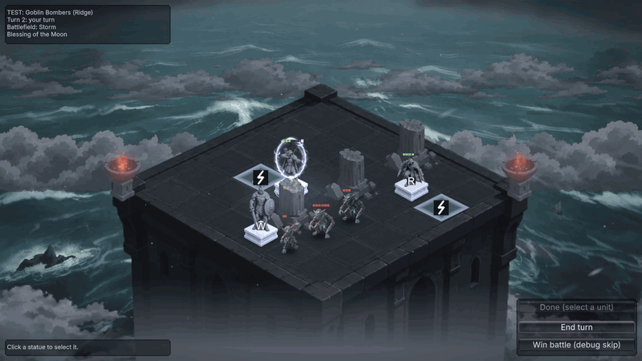

ArmyRoguelike
A roguelike army-builder. You lead a small squad of living statues across a map of fights, shops and events. Each fight is a short turn-based tactical battle against an AI army on a 6x6 board on top of a tower above the clouds.

Vision
Small, sharp tactical fights where every unit's single action matters, wrapped in a run where your army grows one technique at a time, like a deckbuilder. The influences are Slay the Spire's map and card picks, Into the Breach's readable grid and shown enemy intents, and Balatro's run-wide rule-benders.
Design pillars
A real choice every turn
Every unit has 1 move and 1 action, and moves before it acts. Every special action has a cooldown. Combat is deterministic: no hit rolls, so plans fail because of the enemy, not dice.
Readable at a glance
A 6x6 board, enemies that show what they will do, and 17 keywords that rule texts name instead of explaining. Hovering a keyword explains it.
Builds grow one card at a time
After a won fight you pick 1 of 3 techniques for one unit. Techniques combine within a unit and across units, so the army becomes a build.
Enemies fight as a team
Each faction has a plan its units carry out together, and a question it asks the player: who to kill first, where to stand, what to give up.
Core loop
Start: pick 1 of 3 banners and draft 3 of the 5 base units. The army holds 4 units at most.
Act 1 has 12 steps. At each step you pick 1 of 2 nodes, so you can route towards fights or away from them:
Battle
?
?
Battle
?
Battle
?
Battle
Battle
Battle
?
? = an event. Each battle node shows its faction and battlefield rule ahead of time; from step 6, fights bring a champion with a shown trait.
- Fights bring a faction you haven't beaten yet, then rematches. Elites are harder rematches with a rare reward.
- Gold after a fight scales with how many units survived. It is spent only in shops, on techniques, items, recruits, banners and repairs.
- Events offer trades with a price: a rare technique for a permanent scar, gold for a curse, a gamble.
- Cracks: every unit starts each fight at full HP, but a statue that falls gets a crack (-1 max HP until mended). A third crack shatters it for good, with everything it learned. This keeps losses meaningful across the whole run.
Battle
- Board: 6x6, each side in its back two rows, two empty rows between.
- Turns: all your units act, then all enemies. 1 move (2 for Swift units) and 1 action each. Once a unit acts it can't move again: position, then commit.
- Zone of control: stepping away from an adjacent enemy ends your movement, so a front line really holds.
- Cooldowns: basic attacks have none; every other action is ready again after 2–3 of the unit's turns.
- Weight: small, medium or huge decides how far a push moves a unit. Pushes into walls, units, edges and holes deal damage or worse.
- Intents: hover an enemy to see its next action, or hold Alt to see all of them.

Battlefields: one rule per fight
Every fight has a battlefield rule that applies to both sides, shown on the map so you can plan your route. Each has its own scene, so the rule reads before any text.
| Battlefield | Rule |
|---|---|
| Edge of the World | A push off the board kills. The tower hangs over a magic void. |
| Storm | Each round, lightning gathers over one unit of each side and strikes at the end of the enemy turn, unless it steps away. |
| Crumbling Roof | Collisions and deaths crack the roof; a second crack opens a hole that units fall through. |
| Fortune's Favored | Each round, one unit on each side deals double damage. |
| Arcane Overflow | Every cooldown is 1 turn shorter. |
| What's On His Mind? | Enemy intents are hidden. |
Your army
Five base units, each the start of a line with its own technique pool (62 techniques in all) and its own theme keywords. Themes are what one unit makes and another uses: the Sapper builds walls, and the Warrior's Shield Bash hits harder when it slams an enemy into one.
Warrior
Front line. Shield Bash damages and pushes, harder into obstacles.
PushGuardArcher
Range and control. Steady Aim rewards standing still; Pinning Shot stops a unit moving.
PinnedMarkedRogue
Swift and fragile. Vanish hides it until your next turn; its first hit from hiding deals more.
ExposedHiddenPoisonMage Apprentice
Area damage on a 5 HP body. Frost Nova slows everything next to it.
SlowedBurningSapper
Shapes the board with hidden mines, barricades and blasts.
WallBlastGrowth
- Techniques are passives or actions, common or rare, and some need another first. A unit's level is the number it has learned; each level adds stats along its line.
- Tension pieces: every unit has techniques that are strong at a real cost, so taking or using one is a decision. The Archer's Planted roots it in place for powerful pinning shots; the Mage's Overchannel doubles a spell but slows the Mage next turn.
- Items: one slot per unit.
- Banners bend a rule for the whole army for the run, often with a price. Third Wheel gives every unit 2 actions but the army holds only 2 units; Vampiric heals on every hit but brings a sun curse to every fight.
Enemies
Five factions, each built around one plan. The faction map rates how well each faction works as a team and which of the player's themes answer it.
Wolves
The pack goes for your weakest unit, and every bite in a turn makes the next one harder. The Pack Leader howls for extra moves. Kill the leader, or thin the pack?
Goblins
Goblins fling whatever is next to them, including each other. Bombers lob bombs to goblins, who fling them straight at you.
Bandits
Crossbowmen shoot from behind cover while the Brute bodyguards them; the Cutpurse steals your gold and runs for the edge.
Elementals
Huge and slow. Tremors slow your units, and two overlapping tremors pin them. Elementals split into Shards when they die.
Demons
Blood and bargains: they swap places with your units, grow stronger as they bleed, and sign contracts with a price.
Bosses
The Giant (2x2, smashes, slams and throws boulders) or the Necromancer (raises your fallen as his own). Both fight in three phases.
Champions from step 6 carry one trait (Armored, Vengeful, Regenerating, Mighty, Fleet) that asks something new of a finished build.
Scenarios and omens
Two fights with goals other than "kill everything", at steps 4 and 8:
- Moon Shrine (defend): keep the shrine standing for 5 enemy turns while Elementals walk in from the edges.
- Break the Ritual (attack): smash three totems guarded by goblins before turn 6.
Winning the Moon Shrine gives a blessing that lasts the rest of the run. Losing either scenario gives a curse, the same omen turned against you, and the run goes on. Omens: the Sun (a beam strikes a marked tile), the Night (a shroud stops ranged attacks), the Moon (a shield).

Art and sound direction
- Living statues: chunky, hand-painted, like wizard-chess pieces. Your army is pale moon marble; enemies are dark basalt, so teams read apart before anything else.
- One stage: every fight is on the roof of a tower above the clouds at night. Each battlefield changes what lies below: a void, a stormy sea, wheat fields.
- Stone moves like stone: rigid, sudden motion, no idle animation. Statues lift when selected and crumble when they die.
- Sound: weighty, ancient magic, never sci-fi. Stone thuds, cracks and grinding.

How the design is tested
- Playtest logs: every battle and run is saved as a JSON log (damage, kills, technique uses, enemy combos fired), so tuning comes from numbers and how it felt.
- Bot simulator: bots play hundreds of battles to compare fights and drafts and catch outliers before a human plays.
- Design maps: the synergy map tags every skill by the themes it makes and uses, to find holes and duplicates; the faction map does the same for enemy teamwork.
- Balance targets: a new player wins 10–20% of runs, an experienced one 50–60%. No unit should die without warning, and late builds may break the game, but not by step 4.
All numbers are in the gamepedia, generated from the game's own data.
Roadmap
Now
- Playtest the latest round: tension pieces for every unit and teamwork fixes for three factions
- Give the Mage a way out of melee
- Make hidden and slowed states easier to read
Next
- Fill the weak unit pairings found on the synergy map
- Teach the bots to use special actions, to measure the strongest techniques
- UI and HUD art pass; scenes for the remaining battlefields
- A first playable build
Later
- Acts 2 and 3, difficulty levels, unlocks between runs
- Commanders that change the draft and the rules
- Onboarding, save and continue
- One signature rule for the game's identity (candidate: the Crumbling Roof)